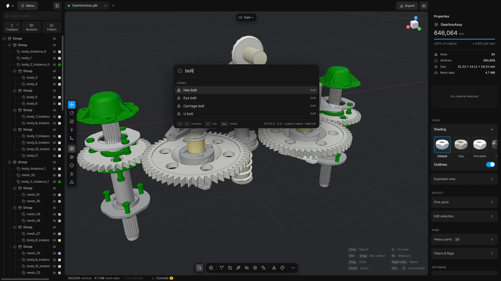
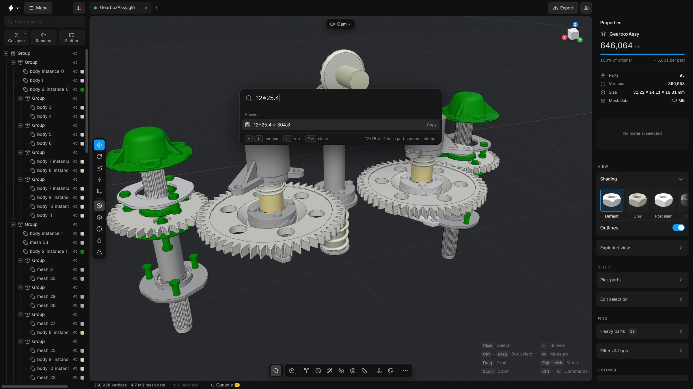

Search and commands
Press Ctrl + K or Shift + C to find any command, part, library part or setting by name, turn a switch without leaving the list, and work out a sum or convert a length.
You do not have to remember where a button is. The search finds it. It is the fastest way to use the app once you know roughly what you want.
Open the search
- Press CtrlK or ShiftC, or click the magnifying glass at the left of the bottom toolbar.
- Start typing. The list below narrows as you type.
- Use ↑ and ↓ to choose a line.
- Press Enter to run it. Press Esc to close the search without doing anything.
What it finds
- Commands
- Everything in the menus and on the toolbars, each with its shortcut (the one you have set, if you changed it). Before you type, the commands you ran lately come first, with suggestions that fit what is selected.
- Sidebar controls
- Every button, slider, switch and field in the right sidebar, listed under the name of its card. Choosing a button runs it. Choosing anything else opens its card and scrolls to it.
- Parts
- Parts of the scene by name. Enter selects the part and frames it, even when it is hidden. When several parts carry what you typed in their name, one row selects them all. Hidden parts are left out of that row.
- Library parts
- Parts you can add. Type
add flangeor justflange, and Enter adds one. - Settings
- The rows of the Settings window, by name. Choosing one opens the window at the right section and takes your eye to the row.


Each kind of result has a colour of its own on its icon: commands by their group, parts, library parts, settings and answers.
Turn a switch without leaving the search
When the search finds a switch, it draws the switch in the result. That goes for a setting, and for a switch in the sidebars or on a command card. Press Enter, click the row or click the switch itself, and it turns on or off. The search stays open, so you can turn another one.
Press ShiftEnter to go to the switch instead. The options of a tool stay ordinary results: choosing one takes you to it.
You do not have to type it exactly
- The words can be in any order.
- Another word for the same thing works:
removefinds Delete,boltsfinds Fasteners andpicturefinds Screenshot. - One slip of the finger is forgiven: a letter wrong, a letter missing, one too many, or two the wrong way round.
- Two to five letters are read as initials too:
rhfinds Remove holes.
The better a command fits, the higher it stands in the list. Among commands that fit about as well, the ones you ran lately stand higher.
Narrow it with a mark
Type one of these marks in front of the words, and the list holds one kind of result only.
>- Commands.
@- Parts of the scene.
@bracketlists parts and nothing else. +- Library parts.
#- Settings.
Move the search
The search does not have to stay in the middle of the window. Press and hold the magnifying glass at its left and drag, and the whole card follows. Drag its right edge to make it wider or narrower. It cannot be narrower than 320 pixels.
The place and the width are remembered, also after you close the search and the next time you open the app. Double-click the magnifying glass to put it back in the middle at its own width.
Commands that cannot run right now
A command that cannot run right now is greyed out, and says why: “Select a part first”, “Open a model first” or “Nothing to undo”. A command that works on the selection, or on every part when nothing is selected, needs only an open model.
What the search looks through, and how loosely it reads what you type, can be changed under Settings, Search. See Settings.
Commands worth knowing
Some tools have no button in the sidebar, or no key of their own. The search is the easy way to reach them. Type a few letters of the name:
- Smart optimise
- Runs every clean-up in one go. See Smart optimise.
- Select fasteners…
- Finds the bolts, screws, nuts and washers. See Fasteners.
- Find stacked copies…
- Finds parts that sit on an identical copy of themselves. See Stacked copies.
- Select hidden parts…
- Finds the parts that cannot be seen from outside. See Select hidden parts.
- Align model to the floor…
- Opens the card that stands the model on the floor. Align model to the floor (with the last choices) does it at once, without opening the card. See Align to floor.
- Align and spread parts…
- Opens the Align parts card, which lines the selected parts up or spaces them evenly. See Align parts.
- Dynamic place
- Turns on dragging the selected part over other surfaces (D). See Move, rotate and scale.
- Remove floating pieces…
- Deletes the small loose pieces of a part. See Remove floating pieces.
- Sweep…
- Opens the Sweep card, which has no button on the toolbar. See Sweep.
- Fit to triangle budget
- Takes you to the budget field so you can type a number.
- Optimisation report
- Shows the model as it was opened against what it is now.
- Duplicate scene, Close other scenes, Close all scenes
- Work on the scene tabs. See Scene tabs.
- Revert to source file…
- Throws away every edit and loads the file again.
- Help & docs
- Opens the help window (F1). See The help window.
- Open welcome screen
- Shows the start screen again.
A calculator
Type a sum or a length and the search works it out. Enter copies the answer, ready to paste into a field.
- 12*25.4
- A sum.
- 2 in
- A length in inches, given in millimetres.
- 50 mm in in
- A length converted to the unit you name.
- 3 thou
- Thousandths of an inch, given in millimetres.


The list of all commands
The … button at the right end of the bottom toolbar opens every command that acts on the model in one list, with its shortcut. A command that cannot run right now is dimmed. Hover over it to see why, for example because nothing is selected.
Command cards
Some commands have settings: Split, Remove holes, Remove floating pieces, Remesh, Smart fit, Select hidden parts, Fasteners, Stacked copies, Align to floor, Align parts and Dynamic place. They open as a card over the bottom left of the viewport.
- Enter
- Run the open card
- Esc
- Put the card away. A second press clears the selection.
A tool that has a key of its own, such as X for Split, closes its card when you press the key again.
Numbers you can drag
Any number field in the app can be dragged sideways to change it, or clicked to type a value. Hold Shift while dragging to go ten times faster and Alt to go ten times finer.
Right-click a number field for a menu of its own. It has Cut, Copy, Paste, Select all and Reset, which puts the field back to its own default. It also has a few quick edits of the number: a step up or down, doubled or halved, a round value, or the other sign. The value of a slider has the same menu. A name you are typing has a menu like it, with quick edits for names: the case, a suffix such as _L or _01, and a clean-up.